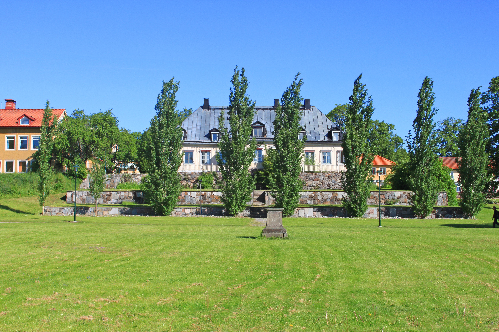

Jag heter Viola Turesson och är 19 år gammal. Jag bor i Sköndal, strax utanför stan, med min mamma och min storebror. Min mamma är sällan hemma och min storebror jobbar på Nordomatic med programmering, samt inom militära. På min fritid träffar jag oftast kompisar, lyssnar mycket på musik, eller ritar och skapar grejer praktiskt.
Jag har tidigare jobberfarenheter på G-Star Raw och Stena Fastigheter. På G-Star Raw började jag praoa när jag gick i 8:an. Senare fick jag anställning där och har jobbat främst på skollov. Stena Fastigheter äger den bostad jag bor i. På sommarlov får ungdommar varje år sommarjobba för fastighetsbolaget. Jag har arbetar där de senaste två somrarna. Min främsta uppgift där är att ta ledning bland sommarjobbarna och trädgårdsarbetet vi utför. Jag har även haft några småjobb privat, som till exempel att gå ut med familjekompisars hund, och liknande.
I slutet av 2018 vill jag känna mig mer säker i mitt arbete och förmodligen ha fler jobbkontakter samt arbetsmöjlighter ute i arbetslivet.
Made with love Skogås 2017